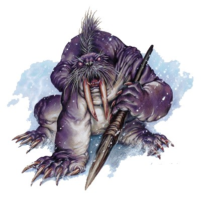

- 9 -
Kışnornu.
Buz Sarayı.
 eyaz kurt, karla kaplı koridorda sessizce, karlı postu buzla kaplı ortamla karıştığından görünmeden ilerledi. Kurt, uzun koridor boyunca uzanan ve buzdan, kemerli tavanı destekleyen, duru buzdan oluşmuş yarı saydam sütunların arasından hızla geçti. Batan güneş, duvar boyunca uzanan kemerli, şeffaf buzdan pencerelerin ardından titrekçe parlayan kırmızı bir küre şeklinde görülüyor ve kar bloklarından oluşmuş duvarların alev gibi parlamasına neden oluyordu.
eyaz kurt, karla kaplı koridorda sessizce, karlı postu buzla kaplı ortamla karıştığından görünmeden ilerledi. Kurt, uzun koridor boyunca uzanan ve buzdan, kemerli tavanı destekleyen, duru buzdan oluşmuş yarı saydam sütunların arasından hızla geçti. Batan güneş, duvar boyunca uzanan kemerli, şeffaf buzdan pencerelerin ardından titrekçe parlayan kırmızı bir küre şeklinde görülüyor ve kar bloklarından oluşmuş duvarların alev gibi parlamasına neden oluyordu.
Buzdan duvarlar, gün boyunca yüzlerce kez renk değiştirirdi; güneş doğarken alev kırmızısı ve portakal rengi, karın devamlı yağdığı gün boyunca beyaz, gece de tekinsiz bir mavi tonunda parlardı. Kristal koridorun devamlı değişen güzelliği çarpıcı ve nefes kesiciydi ama bunun kurt için bir önemi yoktu. Onun için her şey griydi. Kurt, görevine odaklanmış bir halde, sağa sola bakmadan koridor boyunca ilerledi.
Kurt, birkaç kilometre ötede bulunan, harabeleri çok sayıdaki kristal camın her birinden görülebilen Buzduvarı Kalesi'nden gelmişti. Buzduvarı Kalesi, gerçek bir kale değildi. Aslında, Afet öncesinde bir deniz feneri hisarı olarak, ünlü liman şehri Tarsis'in güneyinde yer alan, artık unutulmuş bir adaya yapılmıştı. Kulelerinin tepesindeki işaret ateşleri, bir zamanlar gemileri sis ve karanlıktan güvenle geçirerek limana getirmiş ya da düşman gemileri yaklaşırken şehri uyarmıştı.
Afet çarptığında, karanın yükselmesi yüzünden deniz çekilmiş, Tarsis ve onun ak kanatlı gemileri kuma saplanmıştı. Deniz feneri ve üzerinde bulunduğu ada, güneyden gelen devasa bir buzul tarafından yutulmuştu. Buzun sıkıştırması yüzünden hırpalanan hisarın duvarları kırılmış ve ufalanmıştı. Geriye sadece taştan bir kule kalmıştı ve o da tehlikeli bir biçimde eğilmişti, buz tepecikleri ile destekleniyordu sadece. Hisarın geri kalanının orijinal taş işçiliği, uzun zamandır kat kat buz altına gömülü olduğundan, artık görünürde değildi.
Dünyanın bu kısmında yaşayanlar –hayvan derilerinden yapılmış barakalarda yaşayan balıkçılar– Buzduvarı Kalesi'ne bakmışlar ve onun ilginç bir şey olduğunu düşünmüşlerdi, daha fazlasını değil Buz üzerinde hızla hareket eden kayıklarıyla balıkları takip ederek yaşayan göçebelerden oluşan Buz Halkı, kaleyle hiç ilgilenmiyordu. İçini araştırdıktan ve zalim bir şekilde değiştirilmiş arazide yaşamak için günlük olarak ettikleri mücadelede kendilerine yardımcı olabilecek her şeyi aldıktan sonra, onu kendi haline bırakmışlardı.
Bölgenin diğer sakinleri –mors halkı olarak da tanınan ve Buz Halkı'nın ezeli düşmanları olan hayvansı thanoi'ler– kaleyi hemen hemen bir yıl süreyle ele geçirmişler, Buz Halkı'na saldırı düzenleyebilecekleri bir ileri karakol olarak kullanmışlardı. Sonra da thanoi'ler, kışın vücut bulmuş hali olduğunu korkuyla iddia ettikleri bir adam tarafından oradan sürülmüşlerdi. Feal-Thas geri dönmüştü.
Mızrak Savaşı başladığında Ariakas, kıtanın bu kısmında bir Ejderha Yüceefendisi'ne ihtiyaç duymuştu. Ancak bu zahmetli görevi üstlenecek birini bulmakta zorlanmıştı. İklim korkunçtu, güneyde pek savaş olmadığından şan ve şeref kazanma fırsatı bulunmuyordu ve kişi tütsülenmiş balıkla ilgilenmiyorsa, yağmalanacak bir şey de yoktu. Ariakas, birine Buzsınırı'nı almasını emretmeyi düşünüyordu ama o zaman da memnuniyetsiz bir Yüceefendiye katlanmak zorunda kalacak, onun surat asmasını çekmek, sızlanmalarını ve şikayetlerini dinlemek mecburiyetinde olacaktı. Lakin Ariakas'ın şansı gülmüştü. Feal-Thas'ı bulmuştu.

Bir elf, kara elf de olsa, İmparator'un ilk seçimi olmazdı zira Ariakas ne elfleri seviyor ne de onlara güveniyordu. En iyi elfin ölü elf olduğu konusunda Kraliçesi ile anlaşıyordu ve Majesteleri'nin bu konudaki isteklerinin yerine getirilmesini sağlamak için elinden geleni yapıyordu Ancak Feal-Thas, Buzsınırı'na gitmek istediğini belirten tek kişiydi. Bunun üzerine Ariakas, Feal-Thas'ın sadakatini sınamak için onu ana yurdu olan Silvanesti'ye göndererek elf savaşçıları hakkında bilgi toplamasını istedi. Feal-Thas, Ariakas'a eksiksiz bir rapor ile birlikte Kral Lorac'ın kalbinde gizli olan karanlık bir sır –sonunda Lorac'ın mahvolmasına neden olacak ejderha küresi– hakkında bilgi verdi.
Ariakas elfe yine de güvenmiyordu. Feal-Thas küstah ve alaycıydı ve imparatora, Ariakas'ın hakkı olduğunu düşündüğü saygıyı göstermiyordu. Fakat Buzsınırı'nda yaşamaya gönüllü başka bir aday bulamadığından, Ariakas, buzlarla kaplı çorak bölgeyi istemeye istemeye elfe verdi. Takhisis, Yüceefendi'ye göz kulak olması için beyaz ejderhası Sulusepken'i Buzsınırı'na gönderdi ve sonra hem Kraliçe hem de İmparator onu hızla unuttu.
Feal-Thas'a gelince, kendisini tanıyan herkes için bir muammaydı o. Yeşil ve büyüyen her şeye sevgi ve hürmet gösterdiği bilinen bir ırkın üyesi, bir elf, bütün bitkilerin donarak öldüğü, onların varlığına dair hatıraların bile kar ve buz altına gömülüp yok olduğu bir yerde neden yaşamayı seçerdi ki?
Bu soruya kimse cevap veremiyordu zira Silvanestili kimse artık Feal-Thas'ı hatırlamıyordu, Kral Lorac dışında, ama o da delirmişti. Birileri ilgilenseydi, büyücünün bir zamanlar yaşadığı ve çalıştığı yer olan Wayreth'teki Yüksek Büyücülük Kulesi'nde ona dair kayıtlar bulunabilirdi. Ama kimsenin ilgilenmesi için bir neden yoktu.
Kurdun Yüceefendi hakkında hiçbir soruya cevap veremeyeceği kesindi. Onun tek bildiği, Yüceefendi'nin kendi efendisi olduğuydu. Efendisinin odasına ulaşan kurt, kapıyı burnuyla itti ve içeri girdi.
*****
Feal-Thas, beyaz kürkten uzun pelerinine sıkıca sarılmış, Buz Sarayı'ndaki hemen hemen bütün mobilyalar gibi buzdan yapılma masasında oturuyordu. Kurt odaya girdiğinde elf, İmparator'a rapor yazmakla meşguldü. Feal-Thas, tüy kalemle yazıyor, büyülenmemiş olsaydı donacak olan mürekkebi kullanıyordu. Yüceefendi'nin el yazısı küçük, okunaksız ve narindi ve Ariakas'ı her gördüğünde sinirlendiriyordu; zira yazanın elf olduğu çok belliydi.
Ariakas, elfin karalamalarını sökmek için nadiren zaman ayırıyordu. Feal-Thas'ın hiçbir zaman ilginç olmayan raporlarını okuma ve özetleme işini yardımcılarından birine veriyordu genelde. Abanasinya'nın güneyi ve Toz Ovaları ejderha ordularının eline geçtiğinde Feal-Thas'ın görevi, ikmal hatlarını korumak olacaktı, o zamana kadar tek yapması gereken, donmuş çorak arazisinde kalmak ve savaşın gerçek yükünü üstlenmiş olanların yoluna çıkmamaktı.
Feal-Thas, imparatorun kendisinden hoşlanmadığının ve kendisine güvenmediğinin farkındaydı. Feal-Thas bunu biliyordu, çünkü Ariakas'ın ruhunun sırlarını biliyordu, tıpkı başkalarının ruhlarında saklanan sırları bildiği gibi. Feal-Thas'ın da kendine ait sırları vardı; tehlikeli sırlardı bunlar, en gizli olanı ise kendisinin bir kışnornu, başka güçlerin ötesinde, kısa bir süre (saniyenin yüzde biri) boyunca Zaman Nehri'ni büyüyle "dondurabilme" yetisine sahip nadir büyücülerden biri olduğuydu. Bu zaman zarfında karşısındaki kişinin en derin duygularını ve düşüncelerini hızla öğrenebilirdi; kendisi ve hedefi arasında soğuk bir rüzgar hızla eserek, hedefinin beynine kazınmış olan duyguları adama taşırdı sanki. Bilgileri bir anda edinmiyordu. Değerli bir şey bulabilmek için kişilerin kalplerini kirleten çöpler arasında sabırla çalışması gerekiyordu. Bulduğunda da daha sonra kullanmak için onu saklıyordu.
Kışnornu büyüsü, Feal-Thas'a başkaları üzerinde bir güç vermişti, ama aynı zamanda bir lanet olduğu da ortaya çıkmıştı. Bir elf, bir yabancı olduğundan, kışnornunun sırları Feal-Thas'a asla öğretilmemiş olmalıydı.
Feal-Thas, genç sevgilisini öldürme suçundan üç yüz yıldan daha uzun bir süre önce, kara elf-ışıktan kovulan kişi olarak ilan edilmiş ve ana vatanından kovulmuştu. Buzsınırı olarak bilinen güneydeki topraklara, elf savaşçılar tarafından zincirlenerek getirilmişti. Afet sonrasının donmuş arazisi olmasa da, Buzsınırı o zamanlar yazları kısa, kışlarıysa son derece uzun olan çorak ve merhametsiz bir bölgeydi. Elf savaşçılar, Feal-Thas'ı ölmeye bırakmışlardı ve eğer yakışıklı genç elfe (o sırada sadece on sekiz yaşındaydı) acıyarak hayatını kurtaran yerel halk tarafından bulunmasaydı, muhtemelen ölürdü.
Bu korkunç toprağa sürülmüş olmasından ötürü öfkeli ve gücenmiş olan adam, bir kışnornu olan insan bir kadınla aşk yaşamıştı. Kadını kendisini öğrencisi olarak almaya ikna etmişti. Yabancılara büyüyü öğretmek yasak olmasına karşın, kadın adamın isteklerine boyun eğmiş ve sonsuza dek bundan pişman olmuştu.
Adamın ruhunun karanlığı, başkalarının ruhlarında gördüklerini gölgeliyordu. Onların kalplerine baktığında, en karanlık köşeleri inceliyordu ve bu yüzden de herkesin bencil yalancılar olduğuna inanmıştı. Kimseye güvenemeyeceğini düşündüğü için sevgilisini terk etmişti. Gücüyle silahlı bir şekilde Wayreth Kulesi'ne gitmiş, orada korkunç Sınav'a girdikten sonra çalışmalarını sürdürmüştü. Kralrahip'in saldırısının beklendiği dönemde, Afet'ten kısa bir süre önce Kule'den kaçmıştı. Buzsınırı'na geri dönmüş ve en sonunda da, Ariakas'ın hizmetine girmişti. Aynı zamanda da elflere ihanet ederek onlardan öcünü almıştı. Şimdi tek başına Buz Sarayı'nda yaşıyordu, tek güvendiği dostları, beyaz kurtlarıydı.
Feal-Thas, imparatorun asla okumayacağını bildiği raporunu yazarken ekşi ekşi gülümsedi. Yine de bu aylık raporları yazmak, bir Yüceefendi olarak göreviydi ve görevini aksattığının söylenmesine asla izin vermeyecekti.
Kurt, adama doğru ilerledi ve ayağında taşıdığı branda paketi adamın ayağının dibine bıraktı. Feal-Thas pakete lakayıt bir şekilde baktı ve işine geri döndü.
Kurt, paketi ittirdi. Kurt her gün Buzduvarı Kalesi'ne gidiyor, raporları ve mesajları alıyor, Feal-Thas'ın emirlerini de orada gönülsüz bir şekilde bulunan, kapak ejderanlardan oluşan ufak birliğin komutanına veriyordu.
Feal-Thas kurda gülümsedi ve hayvanı, kürkünü okşayıp bir parça geyik eti vererek ödüllendirdi. Kurt ikramı kabul etti ve bir lokmada yuttuktan sonra yere oturarak efendisinin yeni emrini bekledi. Feal-Thas yazmayı bıraktı. Paketi açtı ve mesajı aldı. Hızla okurken kaşları çatıldı ve daha dikkatli bir şekilde tekrar okudu.
İnce dudakları öfkeyle kıvrıldı. Mesajı buruşturdu ve odanın diğer tarafına fırlattı. Bunun, aralarında sıklıkla oynadıkları oyun olduğunu düşünen kurt, "top"u yakaladı, Feal-Thas'a geri getirerek ayaklarının dibine bıraktı. Feal-Thas gülümsemesini engelleyemedi.
"Teşekkür ederim dostum," dedi kurda. "Bana, benim de efendime hizmet ettiğimi hatırlattın. Sana efendimin benden ne istediğini anlatayım mı? Bunu dinle."
Mektubu masasına koydu, kırışıklıklarını düzeltti ve yüksek sesle okumaya başladı. Kurtlarıyla konuşma, onlarla tek taraflı muhabbet etme, düşüncelerini paylaşma ve planlarını tartışma alışkanlığına kapılmıştı. Feal-Thas, kurtların insanlardan çok daha zeki olduğunu düşündüğünü söylemekten hoşlanırdı, ki bu düşüncesinin başlıca nedeni onların asla cevap vermemesiydi.
" 'İmparator Ariakas, Beyaz Ejderha Ordusu'nun Ejderha Yüceefendisi Feal-Thas'a saygılarını sunar...' vesaire vesaire."
Kurt, kışnornuna park gözler ve sabit bir ilgiyle baktı.
" 'Mavi Kanat'ın Ejderha Yüceefendisi, Mavi Leydi, savaşımız açısından hayati öneme sahip olduğuna inandığım bazı planlarımı görüşmek için kısa bir süre sonra sizinle buluşacak. Bu mektubun amacı, Mavi Leydi'ye güvenimin tam olduğunu bilmenizi sağlamaktır. Onun verdiği emirlere, ben vermiyormuşum gibi uyacaksınız.' İmza, Ariakas, Ansalon İmparatoru, vesaire vesaire."
Kurt esnedi ve özel bölgelerini yalamak için kafasını eğdi.
"Ben de öyle düşünüyorum," diye mırıldandı Feal-Thas.
İkinci mektubu aldı, açarak içindekilere göz attı. Yazı büyük ve kargacık burgacıktı. İmza da çarpıcı, gösterişli ve neredeyse okunaksızdı.
Buradayım. Buluşmamızı dört gözle bekliyorum... yakında!
Kitiara
"Yakında" kelimesinin altı üç kere çizilmişti.
Feal-Thas ayağa kalktı ve karla kaplı odada volta atmaya başladığında beyaz yün cübbesinin üzerine giydiği uzun beyaz kürkü, yerdeki karı süpürüyordu. Siyah Cübbeli bir büyücü olmasına rağmen, kışnornu her zaman beyaz giyerdi; beyaz cübbe, beyaz deri çizmeler. Narin yüz hatları olan uzun boylu ve ince bir adamdı; solgun teni neredeyse buz gibi yarı saydamdı. Beyaz saçı ve kar bulutlarının rengindeki gri gözleri ile Feal-Thas, kendisinin, kışın vücut bulmuş hali olduğuna inanıyor ve genç bir adamken haksız yere sürüldüğü ama beklenmedik ve artıcı bir şekilde aşık olduğu bu yerle bir bütündü.
"Bu durum bizim için hayra alamet değil dostum," dedi Feal-Thas kurda. "Ariakas benden bir şey istiyor, vermek istemeyeceğim bir şey. Bu yüzden de beni korkutması için bu Yüceefendiyi gönderiyor. Bu Mavi Leydi'yi tanıyorum. Ben aşağılık bir elf ve o da bir insan olduğundan, dolayısıyla da benden daha üstün bir varlık olduğuna inandığı için, beni ezip geçmesine izin vereceğimi sanıyor."
"Ariakas'ın ne istediğine gelince, bu suali cevaplamak çok kolay. Değer verdiğim tek şeyi istiyor. Lanet olası ejderha; her şeye burnunu sokan, yalaka hayvan. Kürenin burada olduğunu Takhisis'e söyleyen oydu zaten ve Takhisis de Ariakas'a söyledi. Sanırım, onu istediğine karar vermesi zaten an meselesiydi."
Feal-Thas etrafına bakındı ve sıkıntıyla iç geçirdi. Sakin bir öğleden sonra geçirerek baharatlı sıcak şarap içmeyi ve büyülerine çalışmayı ummuştu. Ancak şimdi Buzduvarı Kalesi'ne giderek şu Yüceefendiyi karşılaması ve Ariakas'ın ahmakça planlarından birini dinlemesi gerekiyordu.
"Ekibi bul," diye emredince, kurt kulaklarını dikip kuyruğunu sallayarak derhal ayrıldı.
Kürküne sarılan kışnornu saraydan çıktı. Kurt ekibi onu bekliyordu; kurtlar kızağın önüne sıralanmışlardı ve her biri kendi yerini almıştı. Liderleri dişi bir kurttu ve sıra boyunca bir ileri bir geri yürüyor, diğerlerinin üzerindeki egemenliğini gösteriyor ve işleriyle ilgilenmek yerine birbirlerine bulaşan bir çift genç erkeğe hırlıyordu.
Feal-Thas hayvanları koştuktan sonra kızağa yerleşti. Kürk ve deriler arasında, adam neredeyse gözden kaybolmuştu. Hayvanlara emir verdi, dişi kurt koşmaya başlayarak hızı belirledi, diğerleri de onun arkasından fırladılar. Kurtlar, kızağı kar ve buz üzerinde çekiyorlardı. Feal-Thas'ın kurtları idare etmesine gerek yoktu. Nereye gittiklerini biliyorlardı.
Batmakta olan güneşin pençeleri gökyüzünü tırmıklayarak, adamın yolunun tepesinde–Buzduvarı Kalesi'nin buzla kaplı duvarları ve tek başına duran kulesi uzun, kanlı çizgiler bıraktı.
Çok yukarıda, bir mavi ejderha kulenin üstünde birkaç kez daire çizdi ve sonra, kanatlarını çırparak kuzeye doğru ilerlemeye başladı.